토목기사 (2016-05-08 기출문제)
1과목: 응용역학
1. 그림과 같은 양단 고정보에서 지점 B를 반시계반향으로 1rad 만큼 화전시켰을 때 B점에 발생하는 단 모멘트의 값이 옳은 것은?
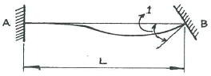
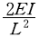
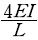
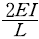
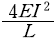
(정답률: 48%)

2. 아치축선이 포물선인 3활절아치가 그림과 같이 등 분포하중을 받고 있을 때, 지점 A의 수평반력은?
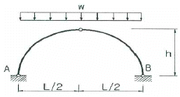
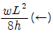
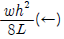
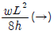
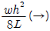
(정답률: 70%)
3. 다음 그림과 같은 양단고정인 보가 등분포하중w를 받고 있다. 모멘트가 0이 되는 위치는 지점부터 A부터 약 얼마 떨어진 곳에 있는가? (단, EI는 일정하다.)
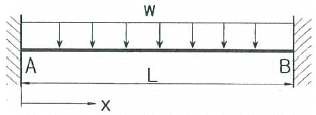
- 0.112L
- 0.212L
- 0.332L
- 0.412L
(정답률: 60%)
4. 길이가 8m이고 단면이 3cm×4cm인 직사각형 단면을 가진 양단 고정인 장주의 중심축에 하중이 작용할 때 좌굴응력은 약 얼마인가? (단, E=2×106kg/cm2이다.)
- 74.7kg/cm2
- 92.5kg/cm2
- 143.2kg/cm2
- 195.1kg/cm2
(정답률: 57%)
5. 직경 d인 원형단면 기둥의 길이가 4m이다. 세장비가 100이 되도록 하려면 이 기둥의 직경은?
- 9cm
- 13cm
- 16cm
- 25cm
(정답률: 72%)
6. 그림과 같은 단순보에서 휨모멘트에 의한 탄성 변형에너지는? (단, EI는 일정하다.)
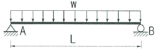
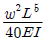
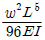
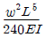
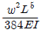
(정답률: 67%)
7. 아래 그림과 같은 봉에 작용하는 힘들에 의한 봉 전체의 수직처짐의 크기는?
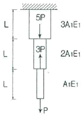
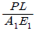
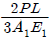
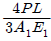
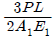
(정답률: 63%)
8. 아래 그림과 같은 보에서 A점의 휨 모멘트는?
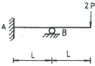
- PL/8(시계반향)
- PL/2(시계반향)
- PL/2(반시계반향)
- PL(시계반향)
(정답률: 54%)
9. 그림과 같은 사다리꼴의 도심 G의 위치 y 로 옳은 것은?(오류 신고가 접수된 문제입니다. 반드시 정답과 해설을 확인하시기 바랍니다.)
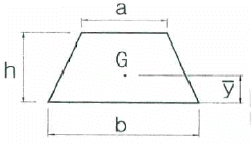
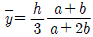
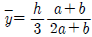
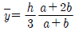
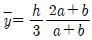
(정답률: 56%)
10. 그림과 같은 구조물에 하중 W가 작용할 때 P의 크기는? (단, 0°<α<180°이다.)
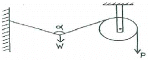
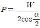
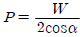
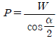
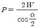
(정답률: 67%)
11. 그림과 같은 게르버보의 E점(지점 C 에서 오른쪽으로 10m떨어진 점)에서의 휨모멘트 값은?
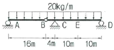
- 600kg·m
- 640kg·m
- 1000kg·m
- 1600kg·m
(정답률: 44%)
12. 다음 그림에서 지점 A와 C에서의 반력을 각각 RA 와 RC 라고 할 때, R4 의 크기는?(오류 신고가 접수된 문제입니다. 반드시 정답과 해설을 확인하시기 바랍니다.)
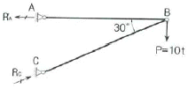
- 20t
- 17.32t
- 10t
- 8.66t
(정답률: 59%)
13. 평면응력을 받는 요소가 다음고 k같이 응력을 받고 있다. 최대 주응력은?
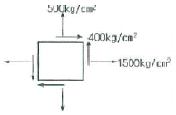
- 640kg/cm2
- 360kg/cm2
- 1360kg/cm2
- 1640kg/cm2
(정답률: 62%)
14. 그림과 같이 속이 빈 원형단면(빗금친 부분)의 도심에 대한 극관성 모멘트는?
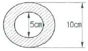
- 460cm4
- 760cm4
- 840cm4
- 920cm4
(정답률: 64%)
15. 그림과 같은 정정 트러스에서 D1부재(AC)의 부재력은?
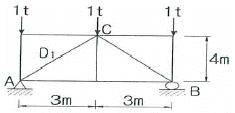
- 0.625t(인장력)
- 0.625t(압축력)
- 0.75t(인장력)
- 0.75t(압축력)
(정답률: 67%)
16. 그림과 같이 길이 20m인 단순보의 중앙점 아래 1cm 떨어진 곳에 지점 C가 있다. 이 단순보가 등분포하중 w=1t/m를 받는 경우 지점 C의 수직반력 Rcy는? (단, EI-2.0×1012 kg·cm2 이다.)
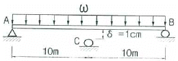
- 200kg)
- 300kg
- 400kg
- 500kg
(정답률: 43%)
17. 탄성계수는 2.3×106 kg/cm2, 프와송비는 0.35 일 때 전단 탄성계수의 값을 구하면?
- 8.1×105 kg/cm2
- 8.5×105 kg/cm2
- 8.9×105 kg/cm2
- 9.3×105 kg/cm2
(정답률: 71%)
18. 그림과 같은 T형 단면을 가진 단순보가 있다. 이 보의 지간은 3m이고, 지점으로부터 1m떨어진 곳에 하중 P=450kg이 작용하고 있다. 이 보에 발생하는 최대 전단응력은?
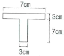
- 14.8 kg/cm2
- 24.8 kg/cm2
- 34.8 kg/cm2
- 44.8 kg/cm2
(정답률: 62%)
19. 그림과 같은 보에서 최대 처짐이 발생하는 위치는? (단, 부재의 EI는 일정하다.)
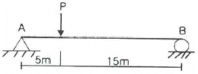
- A점으로부터 5.00m 떨어진 곳
- A점으로부터 6.18m 떨어진 곳
- A점으로부터 8.82m 떨어진 곳
- A점으로부터 10.00m 떨어진 곳
(정답률: 50%)
20. 그림과 같은 단순보의 최대전단응력(τmax)를 구하면? (단, 보의 단면은 지름이 D인 원이다.)
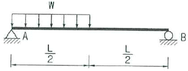
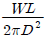
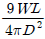
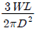
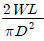
(정답률: 40%)
2과목: 측량학
21. 사진측량의 입체시에 대한 설명으로 틀린 것은?
- 2매의 사진이 입체감을 나타내기 위해서는 사진출척이 거의 같고 촬영한 카메라의 광축이 거의 동일 평면 내에 있어야 한다.
- 여색입체사진이 오른쪽은 적색, 완쪽은 청색으로 인쇄되었을 때 오른쪽에 청색, 왼쪽에 적색의 안경으로 보아야 바른 입체시가 된다.
- 렌즈의 초점거리가 길 때가 짧을 때보다 입체상이 더 높게 보인다.
- 입체시 과정에서 본래의 고지가 반대가 되는 현상을 역입체시라고 한다.
(정답률: 61%)
22. 다음 설명 중 틀린 것은?
- 측지학이란 지구 내부의 특성, 지구의 형상 및 운동을 결정하는 측량과 지구표면상 모든 점들 간의 상호위치 관계를 산정하는 측량을 위한 학문이다.
- 측지측량은 지구의 곡률을 고려한 정밀 측량이다.
- 지각변동의 관축, 향로 등의 측량은 평면측량으로 한다.
- 측지학의 구분은 물리측지학과 기하측지학으로 크게 나눌 수 있다.
(정답률: 58%)
23. GPS 구성 부문 중 위성의 신호 상태를 점검하고, 궤도 위치에 대한 정보를 모니터링 하는 임무를 수행하는 부문은?
- 우주부문
- 제어부문
- 사용자부문
- 개발부문
(정답률: 72%)
24. 표고 h=326.42m인 지대에 설치한 기선의 길이가 L=500m 일 때 평균해면상의 보정량은? (단, 지구 반지름 R=6367km 이다.)
- -0.0156m
- -0.0256m
- -0.0356m
- -0.0456m
(정답률: 57%)
25. 지오이드(Geoid)에 대한 설명으로 옳은 것은?
- 육지와 해양의 지형면을 말한다.
- 육지 및 해저의 요철(凹凸)을 평균한 매끈한 곡면이다.
- 회전타원체와 같은 것으로 지구의 형상이 되는 곡면이다.
- 평균해수면을 육지내부까지 연장했을 때의 가상적인 곡면이다.
(정답률: 67%)
26. GNSS 위성측량시스템으로 틀린 것은?
- GPS
- GSIS
- QZSS
- GALILEO
(정답률: 61%)
27. 삼각측량에서 시간과 경비가 많이 소요되나 가장 정밀한 측량성과를 얻을 수 있는 삼각망은?
- 유심망
- 단삼각형
- 단열삼각망
- 사변형망
(정답률: 69%)
28. 수평 및 수직거리를 동일한 정확도로 곽측하여 육면채의 채적을 3000m3로 구하였다. 체적계산의 오차를 0.6m3 이하로 하기 위한 수평 및 수직거리 관측의 최대 허용 정확도는?
- 1/15000
- 1/20000
- 1/25000
- 1/30000
(정답률: 57%)
29. 축척 1:5000의 지형도 제작에서 등고선 위치오차가 ±0.3mm, 높이 관측오차가 ±0.2mm로 하면 등고선 간격은 최소한 얼마 이상으로 하여야 하는가?
- 1.5m
- 20.m
- 2.5m
- 3.0m
(정답률: 39%)
30. 클로소이드곡선에 관한 설명으로 옳은 것은?
- 곡선반지름 R, 곡선길이 I, 매개변수 A와의 관계식은 RL=A 이다.
- 곡선반지름에 비례하여 곡선길이가 증가하는 곡선이다.
- 곡선길이가 일정할 때 곡선반지름이 커지면 접선각은 작아진다.
- 곡선반지름과 곡선길이가 매개변수 A의 1/2인 점(R=L=A/2)을 클로소이드 특성점이라고 한다.
(정답률: 41%)
31. 지형도의 이용법에 해당되지 않는 것은?
- 저수량 및 토공량 산정
- 유역면적의 도상 측정
- 간접적인 지적도 작성
- 등경사선 관측
(정답률: 51%)
32. 수면으로부터 수심(H)의 0.2H, 0.4H, 0.6H, 0.8H 지점의 유속(V0.2, V0.4, V0.6, V0.8)을 관측하여 평균유속을 구하는 공식으로 옳지 않은 것은?
- V= V0.6
- V= 1/2(V0.2+V0.8)
- V= 1/3(V0.2+V0.6+V0.8)
- V= 1/4(V0.2+2V0.6+V0.8)
(정답률: 66%)
33. 직사각형 토지를 줄자로 특정한 결과가 가로 37.8m, 세로 28.9m 이었다. 이 줄자는 표준길이 30m당 4.7cm가 늘어있었다면 이 토지의 면적 최대 오차는?
- 0.03m2
- 0.36m2
- 3.42m2
- 3.53m2
(정답률: 49%)
34. 그림과 같이 2회 관측한 ∠AOB의 크기는 21°36' 28“. 3회 관측한 ∠BOC는 63°18' 45” 6회 관측한 ∠AOC는 84°54' 37“ 일 때 ∠AOC의 최확값은?
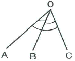
- 84°54' 25“
- 84°54' 31“
- 84°54' 43“
- 84°54' 49“
(정답률: 43%)
35. 그림과 같은 반지름=50m인 원곡선을 설치하고자 할 때 접선거리 AI 상에 있는 HC 의 거리는? (단, 교각=60° , α=20° , ∠AHC=90°)
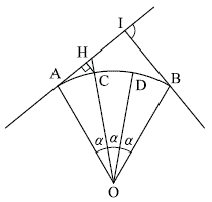
- 0.19m
- 1.98m
- 3.02m
- 3.24m
(정답률: 48%)
36. 항공사진상에 굴뚝의 윗부분이 주점으로부터 80mm 떨어져 나타났으며 굴뚝의 길이는 10mm 이었다. 실제 굴뚝의 높이가 70m라면 이 사진의 촬영고도는?
- 490m
- 560m
- 630m
- 700m
(정답률: 55%)
37. 수준측량에서 전·후시의 거리를 같게 취해도 제거되지 않는 오차는?
- 지구곡률오차
- 대기굴절오차
- 시준선오차
- 표척눈금오차
(정답률: 65%)
38. 노선에 곡선반지름 R=600m인 곡선을 설치할 때, 현의 길이 L=20m에 대한 편각은?
- 54' 18“
- 55' 18“
- 56' 18“
- 57' 18“
(정답률: 53%)
39. 거리는 2.0km에 대한 양차는? (단, 굴절계수 k는 0.14, 지구의 반지름은 6370km이다.)
- 0.27m
- 0.29m
- 0.31m
- 0.33m
(정답률: 63%)
40. 다각측량에서 토털스테이션의 구심오차에 관한 설명으로 옳은 것은?
- 도상의 측점과 지상의 측점이 동일연직선상에 있지 않음으로써 발생한다.
- 시준선이 수평분도원의 중심을 통과하지 않음으로써 발생한다.
- 편심량의 크기에 반비례한다.
- 정반관측으로 소거된다.
(정답률: 48%)
3과목: 수리학 및 수문학
41. 단위유량도에 대한 설명 중 틀린 것은?
- 일정기저시간가정, 비례가정, 중첩가정은 단위도의 3대 기본가정이다.
- 단위도의 정의에서 특정 단위시간은 1시간을 의미한다.
- 단위도의 정의에서 단위 유효우량은 유역전 면적상의 등 강우량 깊이로 측정되는 특정량의 우량을 의미한다.
- 단위 유효우량은 유출량의 형태로 단위도 상에 표시되며, 단위도 아래의 면적은 부피의 차원을 가진다.
(정답률: 50%)
42. 물의 순환과정인 증발에 관한 설명으로 옳지 않은 것은?
- 증발량은 물수지방정식에 의하여 산정될 수 있다.
- 증발은 자유수면 뿐만 아니라 식물의 엽면등을 통하여 기화되는 모든 현상을 의미한다.
- 증발접시계수는 저수지 증발량의 증발접시 증발량에 대한 비이다.
- 증발량은 수면온도에 대한 공기의 포화증기압과 수면에서 일정 높이에서의 증기압의 차이에 비례한다.
(정답률: 63%)
43. 관망(pipe network) 계산에 대한 설명으로 옳지 않은 것은?
- 관내의 흐름은 연속 방정식을 만족한다.
- 가정 유량에 대한 보정을 통한 시산법(trial and error method)으로 계산한다.
- 관내에서는 Darcy-Weisbach 공식을 만족한다.
- 임의 두 점간의 압력강하량은 연결하는 경로에 따라 다를 수 있다.
(정답률: 44%)
44. 강우 강도 I=
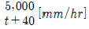
로 표시되는 어느 도시에 있어서 20분 간의 강우량 R20은? (단, t의 단위는 분이다.)- 17.8mm
- 27.8mm
- 37.8mm
- 47.8mm
(정답률: 66%)
45. 그림과 같은 수로의 단위촉당 유량은? (단, 유출계수 C=1이며 이외 손실은 무시함)
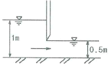
- 2.5m3/s/m
- 1.6m3/s/m
- 2.0m3/s/m
- 1.2m3/s/m
(정답률: 55%)
46. 경심이 5m이고 동수경사가 1/200인 관로에서 Reynolds 수가 1000인 흐름의 평균유속은?
- 0.70m/s
- 2.24m/s
- 5.00m/s
- 5.53m/s
(정답률: 48%)
47. 그림과 같이 물속에 수직으로 설치된 2m×3m 넓이의 수문을 올리는 데 필요한 힘은? (단, 수문의 물속 무게는 1960N이고, 수문과 벽면 사이의 마찰계수는 0.25이다.)
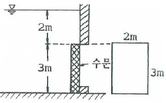
- 5.45kN
- 53.4kN
- 126.7kN
- 271.2kN
(정답률: 50%)
48. 강수량 자료를 해석하기 위한 DAD해석 시 필요한 자료는?
- 강우량, 단면적, 최대수심
- 적설량, 분포면적, 적설일수
- 강우량, 집수면적, 강우기간
- 수심, 유속단면적, 홍수기간
(정답률: 64%)
49. 단위무게 5.88kN/m3. 단면 40cm×40cm, 길이 4m인 물체를 물속에 완전히 가라앉히려 할 때 필요한 최소 힘은?
- 2.51kN
- 3.76kN
- 5.88kN
- 6.27kN
(정답률: 29%)
50. 원형관의 중앙에 피토관(Point tube)을 넣고 관벽의 정수압을 측정하기 위하여 정압관과의 수면차를 측정하였더니 10.7m 이였다. 이 때의 유속은? (단, 피토관 상주 C=1 이다.)
- 8.4m/s
- 11.7m/s
- 13.1m/s
- 14.5m/s
(정답률: 43%)
51. 위어(weir)에 관한 설명으로 옳지 않은 것은?
- 위어를 월류하는 흐름은 일반적으로 상류에서 사류로 변한다.
- 위어를 월류하는 흐름이 사류일 경우(완전월류) 유량은 하류 수위의 영향을 받는다.
- 위어는 개수로의 유량측정, 취수를 위한 수위증가 등의 목적으로 설치한다.
- 작은 유량은 측정할 경우 삼각위어가 효과적 이다.
(정답률: 45%)
52. 유선(streamline)에 대한 설명으로 옳지 않은 것은?
- 유선이란 유체입자가 움직인 경로를 말한다.
- 비정상류에서는 시간에 따라 유선이 달라진다.
- 정상류에서는 유적선(pathline)과 일치한다.
- 하나의 유선은 다른 유선과 교차하지 않는다.
(정답률: 45%)
53. 다음의 손실계수 중 특별한 형상이 아닌 경우, 일반적으로 그 값이 가장 큰 것은?
- 입구 손실계수(fe)
- 단면 급확대 손실계수(fse)
- 단면 급축소 손실계수(fse)
- 출구 손실계수(fo
(정답률: 55%)
54. 다음 설명중 기저유출에 해당되는 것은?
- (A)+(B)+(C)
- (B)+(C)
- (A)+(B1)
- (C)+(B2)
(정답률: 51%)
55. 개수로에서 일정한 단면적에 대하여 최대유량이 흐르는 조건은?
- 수심이 최대이거나 수로 폭이 최소일 때
- 수심이 최소이거나 수로 폭이 최대일 때
- 윤변이 최소이거나 경심이 최대일 때
- 윤변이 최대이거나 경김이 최소일 때
(정답률: 68%)
56. 폭이 1m인 직사각형 개수로에서 0.5m3/s의 유량이 80cm의 수심으로 흐르는 경우, 이 흐름을 가장 잘 나타낸 것은? (단, 동점성 계수는 0.012cm2/s, 한계수심은 29.5cm이다.)
- 층류이며 상류
- 층류이며 사류
- 난류이며 상류
- 난류이며 사류
(정답률: 39%)
57. 직각 삼각형 위어에서 월류수심의 측정에 1%의 오차가 있다고 하면 유량에 발생하는 오차는?
- 0.4%
- 0.8%
- 1.5%
- 2.5%
(정답률: 55%)
58. 다음중 부정류 흐름의 지하수를 해석하는 방법은?
- Theis 방법
- Dupuit방법
- Thiem방법
- Laplace방법
(정답률: 62%)
59. Darcy의 법칙에 대한 설명으로 옳은 것은?
- 지하수 흐름이 층류일 경우 적용된다.
- 투수계수는 무차원의 계수이다.
- 유속이 클 때에만 적용된다.
- 유속이 동수경사에 반비례하는 경우에만 적용된다.
(정답률: 59%)
60. 흐르는 유체 속에 물체가 있을 때, 물차게 유체로부터 받는 힘은?
- 장력(張力)
- 충력(衝力)
- 항력(抗力)
- 소류력(掃流力)
(정답률: 66%)
4과목: 철근콘크리트 및 강구조
61. 철근콘크리트 1방향 슬래브의 설계에 대한 설명 중 틀린 것은?
- 1방향 슬래브의 두꼐는 최소 100mm이상으로 하여야 한다.
- 4변에 의해 지지되는 2방향 슬래브 중에서 단변에 대한 장변의 비가 2배를 넘으면 1방향 슬래브로 해석한다.
- 슬래브의 정모멘트 및 부모멘트 철근의 중심간격은 위험단면에서는 슬래브 두께는 3배 이하이어야 하고, 또한 450mm이하로 하여야 한다.
- 슬래브의 단변반향 보의 상부에 부모멘트로 인해 발생하는 균열을 방지하기 위하여 슬래브의 장변 방향으로 슬래브 상부에 철근을 배치하여야 한다.
(정답률: 52%)
62. 아래와 같은 맞대기 이음부에 발생하는 응력의 크기는? (단, P=360kN, 강판두께 12mm) (문제 오류로 문제가 정확하지 않습니다. 문제 내용을 아시는분께서는 오류 신고를 통하여 보기 내용 작성 부탁 드립니다. 정답은 4번 입니다.)
- 압축응력 fc= 14.4 MPa
- 인장응력 ft = 3000 MPa
- 전단응력 τ = 150MPa
- 압축응력 fc = 120MPa
(정답률: 68%)
63. 아래 그림과 같은 복철근 직사각형 보의 공칭휨 모멘트 강도 Mn은? (단, fck=28MPa, fy=350MPa, As=4500mm2,As'=1800mm2 이며 압축, 인장철근 모두 항복한다고가정한다
- 724.3kN·m
- 765.9kN·m
- 792.5kN·m
- 831.8kN·m
(정답률: 59%)
64. 그림과 같은 띠철근 단주의 균형상태에서 축방향 공칭하중(Pb)은 얼마인가? (단, fck=27MPa, fy=400MPa, Ast=4-D35=3800mm2)
- 1360.9kN
- 1520.0kN
- 3645.2kN
- 5165.3kN
(정답률: 29%)
65. 직사각형 단면의 보에서 계수 전단력 Vu=40kN을 콘크리트만으로 지지하고자 할 때 필요한 최소 유효깊이(d)는? (단, fck=25MPa이고, bw =300mm이다.)
- 320mm
- 348mm
- 384mm
- 427mm
(정답률: 54%)
66. 아래 표와 같은 조건에서 처짐을 계산하지 않는 경우의 보의 최소 두께는 약 얼마인가?
- 680mm
- 700mm
- 720mm
- 750mm
(정답률: 52%)
67. 압축 철근비가 0.01 이고, 연장철근비가 0.003인 철근콘크리트보에서 장기 추가처짐에 대한 계수(rΔ)의 값은? (단, 하중재하기간은 5년6개월 이다.)
- 0.80
- 0.933
- 2.80
- 1.333
(정답률: 61%)
68. 다음 그림과 같이 W=40kN/m 일 때 PS 강재가 단면 중심에서 긴장되며 인장측의 콘크리트 응력이 “0”이 되려면 PS 강재에 얼마의 긴장력이 작용하여야 하는가?
- 46⑤kN
- 5000kN
- 5200kN
- 5625kN
(정답률: 63%)
69. 강도설계법에서 인장철근 D29(공칭 직경 dp=28.66mm)을 정착시키는 데 소요되는 기본 정착길이는? (단, fck =24MPa, fy =300MPa으로 한다.)
- 682mm
- 785mm
- 827mm
- 1⑤1mm
(정답률: 54%)
70. 아래 그림과 같은 직사각형 단면의 균열모멘트(Mcr)는? (단, 보통중량 콘크리트를 사용한 경우로서, fck=21MPa, As=4800mm2)
- 36.13kN·m
- 31.25kN·m
- 27.98kN·m
- 23.65kN·m
(정답률: 53%)
71. 아래 그림과 같은 단철근 직사각형 보에서 설계휨강도 계산을 위한 강도감소계수(ø)는? (단, fck=35MPa, fy=400MPa, As=3500mm2)
- 0.806
- 0.813
- 0.827
- 0.839
(정답률: 50%)
72. 인장 이형철근의 정착길이 산정 시 필요한 보정계수에 대한 설명을 틀린 것은? (단, fsp는 콘크리트의 쪼갬인장강도)
- 상부철근(정착길이 또는 겹침이음부 아래 300mm를 초과되게 굳지 않은 콘크리트를 친 수평철근)인 경우, 철근배근 위치에 따른 보정계수 1.3을 사용한다.
- 에폭시 도막철근인 경우, 피복두께 및 순간격에 따라 1.2나 2.0의 보정계수를 사용한다.
- fsp가 주어지지 않은 전경량콘크리트인 경우 보정계수(λ)는 0.75를 사용한다.
- 에폭시 도막철근이 상부철근인 경우에 상부철근의 위치계수와 철근 도막계수의 곱이 1.7보다 클 필요는 없다.
(정답률: 38%)
73. PSC 보를 RC 보처럼 생각하여, 콘크리트는 압축력을 받고 긴장재는 인장력을 받게 하여두 힘의 우력 모멘트로 외력에 의한 휨모멘트에 저항시킨다는 생각은 다음 중 어느 개념과 같은가?
- 응력개념(stress consept)
- 강도개념(strength concept)
- 하중평형개념(load balancing concept)
- 균등절 보의 개념(homogeneous beam concept)
(정답률: 54%)
74. 직접 설계법에 의한 슬래브 설계에서 전체 정적계 수 휨모멘트 M0=340kN·m로 계산되었을 때, 내부 경간의 부계수 휨모멘트는 얼마인가?
- 102kN·m
- 119kN·m
- 204kN·m
- 221kN·m
(정답률: 41%)
75. 경간 25m인 PS콘크리트 보에 계수하중 40kN/m이 작용하고, P=2500kN의 프리스트레스가 주어질때 등분포 상향력 u를 하중평형(Balanced Load) 개념에 의해 계산하여 이보에 작용하는 순수하향 분포하중을 구하면?
- 26.5kN/m
- 27.3kN/m
- 28.8kN/m
- 29.6kN/m
(정답률: 47%)
76. 직사각형 단면(300×400mm)인 프리텐션 부재에 550mm2의 단면적을 가진 PS강전을 콘크리트 단면 도심에 일치하도록 배치하였다. 이때 1350MPa의 인장응력이 되도록 긴장한 후 콘크리트에 프리스트레스를 도입한 경우 도입직후 생기는 PS강선의 응력은? (단, n=6, 단면적은 총단면적 사용)
- 371MPa
- 398MPa
- 1313MPa
- 132MPa
(정답률: 43%)
77. 인장응력 검토를 위한 L-150×90×12 인 형강(angle)의 전개 총폭 bg는 얼마인가?
- 228mm
- 232mm
- 240mm
- 252mm
(정답률: 66%)
78. 프리스트레스트 콘크리트 구조물의 특정에 대한 설명으로 틀린 것은??
- 철근콘크리트의 구조물에 비해 진동에 대한 저항성이 우수하다.
- 설계하중하에서 균열이 생기지 않으므로 내구성이 크다.
- 철근콘크리트 구조물에 비하여 복원성이 우수하다.
- 공사가 복잡하여 고도의 기술을 요한다.
(정답률: 55%)
79. 1방향 철근콘크리트 슬래브의 전체 단면적이 2000000mm2이고, 사용한 이형 철근의 설계기준 항복강도가 500MPa인 경우, 수축 및 온도철근량 의 최소값은?
- 1800mm2
- 2400mm2
- 3200mm2
- 3800mm2
(정답률: 34%)
80. 그림과 같은 원형철근기둥에서 콘크리트구조설계 기준에서 요구하는 최대나선철근의 간격은 약 얼마인가? (단, fck=24MPa, fsyt=400MPa, D10 철근의 공칭 단면적은 71.3mm2이다.)
- 35mm
- 38mm
- 42mm
- 45mm
(정답률: 28%)
5과목: 토질 및 기초
81. 두께가 4미터인 점토층이 모래층사이에 끼어있다. 점토층에 3t/m2의 유효응력이 작용하여 최종침하량이 10cm가 발생하였다. 실내압밀시험결과 측정된 압밀계수( Cv)=2×10-4cm2/sec라고 할 때 평균 압밀도 50%가 될 때까지 소요일수는?
- 288일
- 312일
- 388일
- 456일
(정답률: 43%)
82. 그림과 같은 지반에서 유효응력에 대한 점착력 및 마찰각이 각각 c'=1.0t/m2. ø′=20°일 때, A 점에서의 전단강도(t/m2)는?
- 3.4t/m2
- 4.5t/m2
- 5.4t/m2
- 6.6t/m2
(정답률: 59%)
83. 연약한 점성토의 지반특성을 파악하기 위한 현장 조사 시험방법에 대한 설명 중 틀린 것은?
- 현장베인시험은 연약한 점토층에서 비배수 전단강도를 직접 산정할 수 있다.
- 정적콘관입시험(CPT)은 콘지수를 이용하여 비배 수 전단강도 추정이 가능하다.
- 표준관입시험에서의 N값은 연약한 점성토 지반특성을 잘 반영해 준다.
- 정적콘관입시험(CPT)은 연속적인 지층분류 및 건단강도 추정 등 연약점토 특성분석에 매우 효과적이다.
(정답률: 49%)
84. 흙의 분류에 사용되는 Casagrande 소성도에 대한 설명으로 틀린 것은?
- 세립토를 분류하는 데 이용된다.
- U선은 액성한계와 소성지수의 상한선으로 U선 위쪽으로는 측점이 있을 수 없다.
- 액성한계 50%를 기준으로 저소성(L) 흙과 고소성(H) 흙으로 분류한다.
- A선 위의 흙은 실트(M) 또는 유기질토(O)이며, A선 아래의 흙은 점토(C)이다.
(정답률: 56%)
85. 흙의 다짐에 있어 램머의 중량이 2.5kg, 낙하고 30cm, 3층으로 각층 다짐횟수가 25회 일 때 다짐에너지는? (단, 몰드의 체적은 1000cm3이다.)
- 5.63kg·cm/cm3
- 5.96kg·cm/cm3
- 10.45kg·cm/cm3
- 0.66kg·cm/cm3
(정답률: 47%)
86. 수평방향투수계수가 0.12cm/sec이고, 연직방향 투수계수가 0.03cm/sec 일 때 1일 침투유량은?
- 970m3/day/m
- 1080m3/day/m
- 1220m3/day/m
- 1410m3/day/m
(정답률: 54%)
87. 다음 그림에서 C점의 압력수두 및 전수두 값은 얼마인가?
- 압력수두 3m, 전수두2m
- 압력수두 7m, 전수두0m
- 압력수두 3m, 전수두3m
- 압력수두 7m, 전수두4m
(정답률: 64%)
88. 그림과 같이 흙입자가 크기가 균일한 구(직경:d)로 배열되어 있을 때 간극비는?
- 0.91
- 0.71
- 0.51
- 0.35
(정답률: 47%)
89. 표준관입시험(S.P.T)결과 N치가 25 이었고, 그때 채취한 교란시료로 입도시험을 한 결과 입자가 둥글고, 입도분포가 불량할 때 Dunham공식에 의해서 구한 내부 마찰각은?
- 32.3°
- 37.3°
- 42.3°
- 48.3°
(정답률: 52%)
90. 콘크리트 말뚝을 마찰말뚝으로 보고 설계할 때, 총 연적하중을 200ton, 말뚝 1개의 극한지지력을 89ton, 안전율을 2.0으로 하면 소요말뚝의 수는?
- 6개
- 5개
- 3개
- 2개
(정답률: 50%)
91. 점착력이 1.4t/m2, 내부마찰각이 30°, 단위중량이 1.85t/m3인 흙에서 인장균열 깊이는 얼마인가?
- 1.74m
- 2.62m
- 3.45m
- 5.24m
(정답률: 50%)
92. 다음 중 사면의 안정해석 방법이 아닌 것은?
- 마찰원법
- 비숍(Bishop)의 방법
- 펠레니우스(Fellenius) 방법
- 테르자기(Terzaghi)의 방법
(정답률: 48%)
93. 간극률 50%이고, 투수계수가 9×10-2cm/sec인 지반의 모관 상승고는 대략 어느 값에 가장 가까운가? (단, 흙입자의 형상에 관련된 상수 C=0.3cm2, Hazen공식:k=C1×에서 c1=100으로 가정)
- 1.0cm
- 5.0cm
- 10.0cm
- 15.0cm
(정답률: 36%)
94. 흙의 다짐에 대한 설명으로 틀린 것은?
- 다짐에너지가 증가할수록 최대 건조단위중량은 증가한다
- 최적함수비는 최대 건조단위중량을 나타낼 때의 함수비이며, 이때 포화도는 100% 이다.
- 흙의 투수성 감소가 요구될 때에는 최적함수비의 습윤측에서 다짐을 실시한다.
- 다짐에너지가 증가할수록 최적함수비는 감소한다.
(정답률: 46%)
95. 그림과 같은 지층단면에서 지표면에 가해진 5t/m2의 상재하중으로 인한 점토층(정규압밀점도)의 1차압밀 최종침하량(S)을 구하고, 침하량이 5cm일때 평균압밀도(U)를 구하면?
- S = 18.5cm, U = 27%
- S = 14.7cm, U = 22%
- S = 18.5cm, U = 22%
- S = 14.7cm, U = 27%
(정답률: 35%)
96. 동일한 등분포 하중이 작용하는 그림과 같은 (A)와(B) 두 개의 구형기초판에서 A와 B점의 수직 Z 되는 깊이에서 증가되는 지중응력을 각각 σAσB라 할 때 다음 중 옳은 것은? (단, 지반 흙의 성질은 동일함)
(정답률: 50%)
97. 말뚝재하시험 시 연약점토지반인 경우는 pile의 타입 후 20여일이 지난 다음 말뚝재하시험을 한다. 그 이유는?
- 주면 마찰력이 너무 크게 작용하기 때문에
- 부마찰력이 생겼기 때문에
- 타입시 주변이 교란되었기 때문에
- 주위가 압축되었기 때문에
(정답률: 59%)
98. Mohr 응력원에 대한 설명 중 옳지 않은 것은?
- 임의 평면의 응력상태를 나타내는데 매우 편리하다.
- 평면기점(origin of plane, p)은 최소주응력을 나타내는 원호상에서 최소주응력면과 평행선이 만나는 점을 말한다.
- σ1과 σ3의 차의 벡터를 반지름으로 해서 그린원이다.
- 한 면에 응력이 작용하는 경우 전단력이 0이면, 그 연직응력을 주 응력으로 가정한다.
(정답률: 61%)
99. 최대주응력이 10t/m2, 최소주응력이 4t/m2일 때 최소주응력 면과 45°를 이루는 평면에 일어나는 수직응력은?
- 7t/m2
- 3t/m2
- 6t/m2
- 4√2t/m2
(정답률: 50%)
100. 폭이 10cm, 두께 3mm인 Paper Drain설계 시 Sand drain의 직경과 동등한 값(등치환산원의 지름)으로 볼 수 있는 것은?
- 2.5cm
- 5.0cm
- 7.5cm
- 10.0cm
(정답률: 42%)
6과목: 상하수도공학
101. 혐기성 소화 공정의 영향인자가 아닌 것은?
- 체류기간
- 메탄함량
- 독성물질
- 알칼리도
(정답률: 55%)
102. 합류식 하수도의 시설에 해당되지 않는 것은?
- 오수받이
- 연결관
- 우수토실
- 오수관거
(정답률: 44%)
103. 막여과시설의 약품세척에서 무기물질 제거에 사용되는 약품이 아닌 것은?
- 염산
- 차아염소산나트륨
- 구연산
- 황산
(정답률: 60%)
104. 하수도시설에 관한 설명으로 옳지 않은 것은?
- 하수도시설은 관거시설, 펌프장시설 및 처리장시설로 크게 구별할 수 있다.
- 하수배제는 자연유하를 원칙으로 하고 있으며 펌프시설도 사용할 수 있다.
- 하수처리장시설은 물리적 처리시설을 제외한 생물학적, 화학적 처리시설을 의미한다.
- 하수 배제방식은 합류식과 분류식으로 대별할 수 있다.
(정답률: 69%)
1⑤. 맨홀에 인버트(invert)를 설치하지 않았을 때의 문제점이 아닌 것은?
- 맨홀 내에 퇴직물이 쌓이게 된다.
- 맨홀 내에 물기가 있어 작업이 불편하다.
- 환기가 되지 않아 냄새가 발생한다.
- 퇴직물이 부패되어 악취가 발생한다.
(정답률: 53%)
106. 금속이온 및 염소이온(염화나트륨 제거율 93% 이상)을 제거할 수 있는 막여과공범은?
- 역삼투법
- 정밀여과법
- 한외여과법
- 나노여과법
(정답률: 60%)
107. 상수 원수에 포함된 색도 제거를 위한 단위조작으로 거기가 먼 것은?
- 폭기처리
- 응집침전처리
- 활성탄처리
- 오존처리
(정답률: 36%)
108. BOD 가 155mg/L인 폐수에서 탈산소계수(K1)가 0.2/day일 때 4일 후에 남아있는 BOD는? (단, 탈산소계수는 상용대수 기준)(오류 신고가 접수된 문제입니다. 반드시 정답과 해설을 확인하시기 바랍니다.)
- 27.3mg/L
- 56.4mg/L
- 127.5mg/L
- 172.2mg/L
(정답률: 32%)
109. 하수관거의 단면에 대한 설명으로 옳지 않은 것은?
- 계란형은 유량이 적은 경우 원형거에 비해 수리학적으로 유리하다.
- 말굽형은 상반부의 아치작용에 의해 역학적으로 유리하다.
- 원형, 직사각형은 역학계산이 비교적 간단하다.
- 원형은 주로 공장제품이므로 지하수의 침투를 최소화할 수 있다.
(정답률: 58%)
110. BOD 250mg/L의 폐수 30,000m3/day를 활성슬러지법으로 처리하고자 한다. 반응조내의 MLSS 농도가 2,500mg/L, F/M비가 0.5kg BOD/kg MLSS·bay로 처리하고자 하면 BOD 용적부하는?
- 0.5kg BOD/m3·day
- 0.75kg BOD/m3·day
- 1.0kg BOD/m3·day
- 1.25kg BOD/m3·day
(정답률: 32%)
111. 배수관을 다른 지하매설물과 교차 또는 인접하여 부설할 경우에는 최소 몇 cm 이상의 간격을 두어야 하는가?
- 10cm
- 30cm
- 80cm
- 100cm
(정답률: 52%)
112. 급수용 저수지의 필요수량을 결정하기 위한 유량누가곡선도에 대한 설명으로 틀린 것은?
- 필요(유효)저수량은 EF 이다.
- 저수시작점은 C 이다.
- DE 구간에서는 저수지의 수위가 상승한다.
- 이론직 산출방법으로 Ripple's method라 한다.
(정답률: 65%)
113. 계획인구 150,000명인 도시의 수도계획에서 계획급수인구가 142,500명일 때 1인 1일의 최대급 수량을 450L로 하면 1일 최대급수량은?
- 6,750,000m3/day
- 67,500m3/day
- 333,333m3/day
- 64,125m3/day
(정답률: 57%)
114. 상수의 완속여과방식 정수과정으로 옳은 것은?
- 여과 → 침전 → 살균
- 살균 → 침전 → 여과
- 침전 → 여과 → 살균
- 침전 → 살균 → 여과
(정답률: 62%)
115. 상수도 계통의 도수시설에 관한 설명으로 옳은 것은?
- 적당한 수질의 물을 수원지에서 모아서 취하는 시설을 말한다.
- 수원에서 취한 물을 정수장까지 운반하는 시설을 말한다.
- 정수 처리된 물을 수용가에서 공급하는 시설을 말한다.
- 정수장에서 정수 처리된 물을 배수지까지 보내는 시설을 말한다.
(정답률: 65%)
116. 그림은 펌프특성곡선이다. 펌프의 양정을 나타내는 곡선 형태는?
- A
- B
- C
- D
(정답률: 57%)
117. 합류식 하수도는 강우시에 처리되지 않은 오수의 일부가 하천 등의 공공수역에 방류되는 문제점을 갖고 있다. 이에 대한 대책으로 적합하지 않은 것은?
- 차집관거의 축소
- 실시간 제어방법
- 스월조절조(swirl regulator) 설치
- 우수저류지 설치
(정답률: 62%)
118. 장기 폭기법에 관한 설명으로 옳은 것은?
- F/M비가 크다.
- 슬러지 발생량이 적다.
- 부지가 적게 소요된다.
- 대규모 처리장에 많이 이용된다.
(정답률: 48%)
119. 관로시설의 설계시 계획하수량으로 옳지 않은 것은?
- 우수관거: 계획우수량
- 오수관거: 계획1일최대오수량
- 차집관거: 우천시 계획오수량
- 합류식 관거: 계획시간최대오수량+계획우수량
(정답률: 55%)
120. 분말활성탄과 입상활성탄의 비교 설명으로 틀린 것은?
- 분말활성탄은 재생사용이 용이하다.
- 분말활성탄은 기존시설을 사용하여 처리할 수 있다.
- 입상활성탄은 누출에 의한 흑수현상(검은물발생) 우려가 없다.
- 입상활성탄은 비교적 장기간 처리하는 경우에 유리하다.
(정답률: 57%)